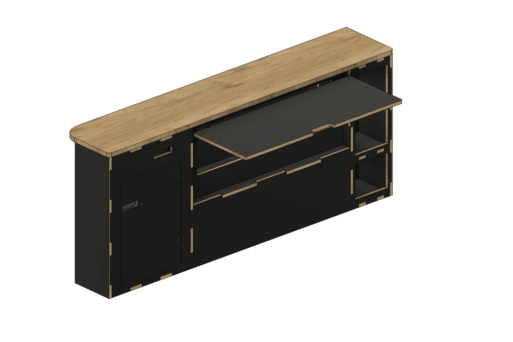
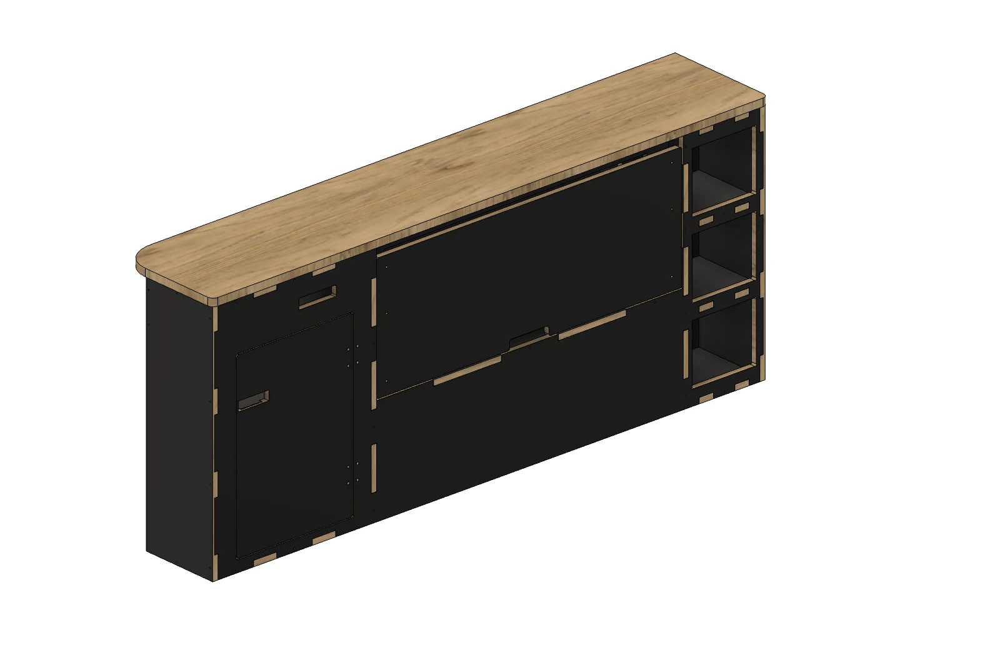
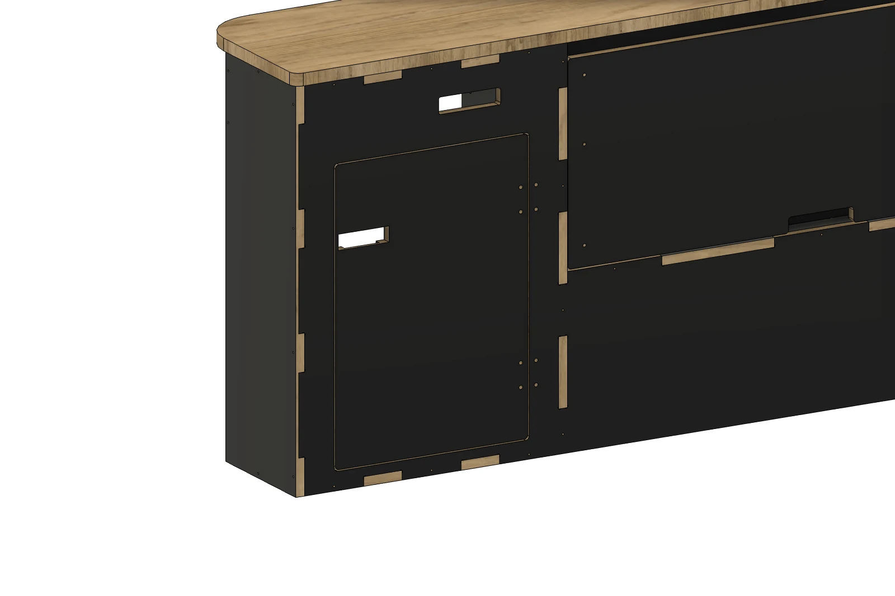
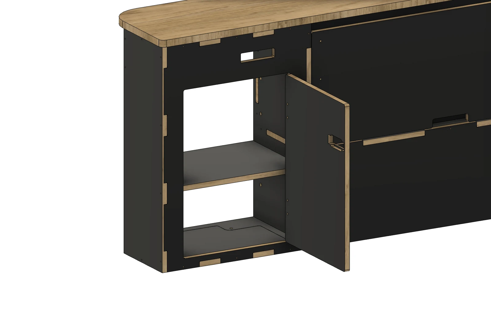
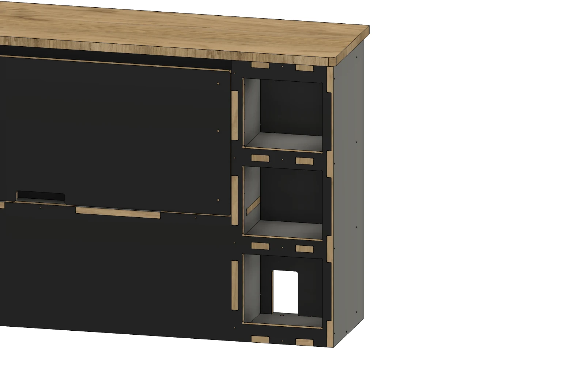
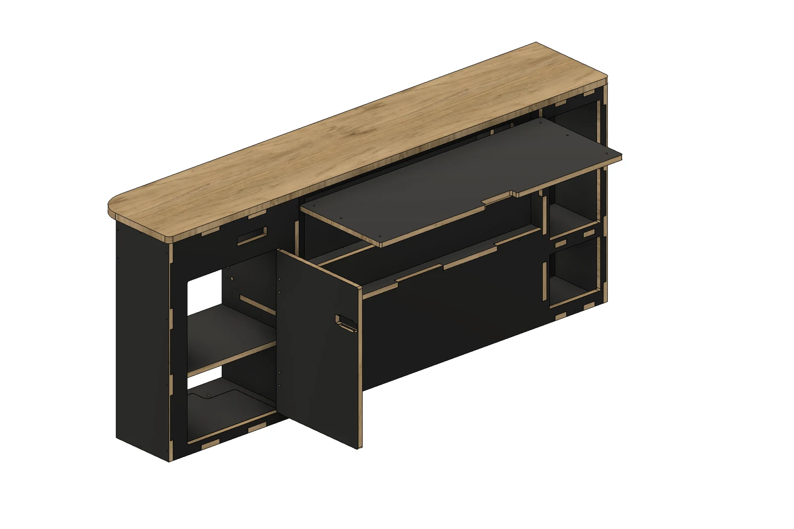

モジュール一覧 / フリップアップテーブル付きサイドキャビネットMODULE 03 / 11
Side cabinet with flip-up table
PLYWOODフリップアップテーブル付きサイドキャビネット
起こすと、テーブルになる。
正面中央の板をフリップアップして、必要なときにテーブルへ。左の扉付き収納と、右の3段の小物収納を組み合わせたサイドキャビネットです。
Side cabinet with flip-up table

ヘキサ合板01
フリップアップ中央の板を起こして、857×325mmのテーブルに
02
扉付き収納左側の扉は、右吊元で開閉
03
小物収納右側の3段に分けて整理
MAIN FEATURE / FLIP-UP TABLE
正面の板が、テーブルへ。
閉じた状態と、水平まで起こした状態。同じ角度でフリップアップの変化が分かります。

LEFT STORAGE / RIGHT-HAND HINGE
左の収納は、右吊元の扉から。
扉を開くと、内部の棚収納へアクセスできます。


THREE TIERS / SMALL ITEMS
右側の3段に、小物を分ける。
テーブルと扉付き収納に加え、右側には3段の小物収納を備えています。


DETAILS
モジュールの内容
- 合板の仕上げ
- ヘキサ合板（ブラック）／バーチ合板
- 合板の小口
- どちらの仕様も木の色・木目
- 主な機能
- フリップアップテーブル・左扉収納・右3段収納
- フリップアップ板
- 857×325×15mm／ヘキサ・バーチから選択
- 左側の扉
- 正面から見て右側が吊元
- 右側の収納
- 上・中・下の3段
- 上部の天板
- ALBERO（アルベロ）合板・厚さ20mm
- 天板の張り出し
- 前・左右に5mm
- 天板前側の角
- R15